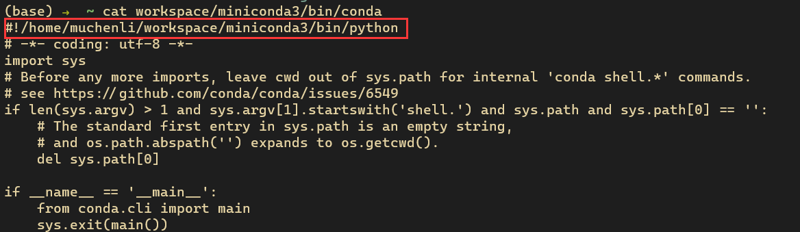

Envs Setup
Mac Setup
Disable macs key on-hold behaviour for better vscode+vim experience.
Reference https://github.com/VSCodeVim/Vim#quick-example
$ defaults write com.microsoft.VSCode ApplePressAndHoldEnabled -bool false # For VS Code
$ defaults write com.microsoft.VSCodeInsiders ApplePressAndHoldEnabled -bool false # For VS Code Insider
$ defaults write com.vscodium ApplePressAndHoldEnabled -bool false # For VS Codium
$ defaults write com.microsoft.VSCodeExploration ApplePressAndHoldEnabled -bool false # For VS Codium Exploration users
$ defaults delete -g ApplePressAndHoldEnabled # If necessary, reset global default
Try lastone and reboot mac.
In Preference->Key board, set key repeat rate to be high and delay until repeat to be low.
Linux
Sample bashrc
Setup ssh config
Host *
ControlMaster auto
ControlPath ~/.ssh/sockets/%r@%h-%p
ControlPersist 1800
ServerAliveInterval 60
ServerAliveCountMax 30
remember to mkdir ~/.ssh/sockets
Turning On Or Off Fn Mode In Ubuntu Linux
echo 2 | sudo tee /sys/module/hid_apple/parameters/fnmode
https://www.hashbangcode.com/article/turning-or-fn-mode-ubuntu-linux
Setup a new device partition
https://www.digitalocean.com/community/tutorials/how-to-partition-and-format-storage-devices-in-linux
How to migrate an existing miniconda
This comes in some server where your home directory is almost full. mv the ~/Miniconda or ~/Conda environments to some place else and modify the first line in say:

Install/Upgrade your CUDA
Strictly follow this https://docs.nvidia.com/cuda/cuda-installation-guide-linux/index.html#ubuntu-installation
Reboot to make nvidia-smi work.
Quick CheetSheet for updating Cuda
Solving issue for apt-get update
wget https://developer.download.nvidia.com/compute/cuda/repos/ubuntu2004/x86_64/cuda-ubuntu2004.pin
sudo mv cuda-ubuntu2004.pin /etc/apt/preferences.d/cuda-repository-pin-600
sudo apt-key adv --fetch-keys https://developer.download.nvidia.com/compute/cuda/repos/ubuntu2004/x86_64/3bf863cc.pub
sudo add-apt-repository "deb https://developer.download.nvidia.com/compute/cuda/repos/ubuntu2004/x86_64/ /"
sudo apt-get update
Remove old one and install desired one
sudo apt update
sudo apt purge "nvidia-*"
sudo apt autoremove
sudo apt auto-clean
sudo apt-get install cuda-11-8
When boot is full checkout https://askubuntu.com/questions/345588/what-is-the-safest-way-to-clean-up-boot-partition